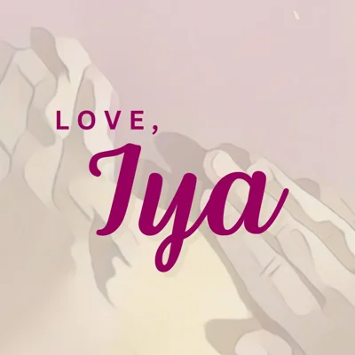
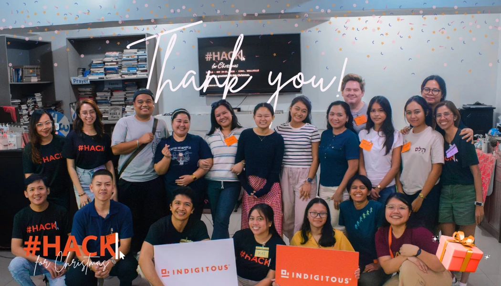

Our sponsors
Made possible bygenerous hearts
Thank you to the people and businesses who gave so #HACK Christmas Iloilo could happen.



And our individual sponsors
- John
- Starlyn
- Lomarie
- Brennan
- Ike
- Shelly
- JJ
- Angela
In 24 hours, four teams built something to help Nonoy, 19, from Jaro, find the true meaning of Christmas. Here's what they made and presented on Saturday, Nov 21. Want to help these projects go further? See what's next →
What's next
These projects were built in 24 hours. With a little help they can reach a lot more people like Nonoy this Christmas and beyond.
Dates, links and resources for everyone are on the participant hub.
See all next steps →The people behind the projects
Students, pastors, designers, developers and musicians from churches across Iloilo, all building for one 19-year-old named Nonoy.
All 3 of 3 ministry workers and 4 of 7 students raised their hand to mentor.
Bright part of each bar = can mentor.
From a software engineer to a campus missionary to a real estate endorser.
Most people picked more than one. Video was the crowd favorite: 11 of 16 make reels.
Based on the #HACK Iloilo 2026 registration form (16 responses), so it counts who signed up, which may differ slightly from who came on the day.
In their own words
Nine participants filled in the event evaluation right after the closing on Saturday. Here's what stayed with them.
Thaaat we can make contents for Jesus!!
It's true that during Christmas season, people are very open and willing to listen, so let's grab the opportunity to share Jesus.
When we are expected to share the Gospel, it should be suitable for anyone to approach the unreached. It's also a blessing to use our God-given talents to spread the Good News.
To share the gospel even through the digital media and to sow seeds of faith as we go along and meet new people.
To be connected with other Christians and collaborate in making content to share the gospel in social media.
I was trained and mentored in doing evangelism via online platforms, spreading the word of God in a faster way.
It was a great experience combining theoretical and practical practices and expertise.
Thank you for holding this kind of event. It has reminded us again to use social media in sharing Jesus.
From the #HACK Christmas Iloilo event evaluation (9 responses). Quotes are lightly edited for spelling and shared without names.
Our sponsors
Thank you to the people and businesses who gave so #HACK Christmas Iloilo could happen.

And our individual sponsors
Salamat sa tanan!
Thank you to every participant, mentor, volunteer and partner who gave their Friday night and Saturday to share the greatest gift.

More photos in the #HACK photos folder ↗